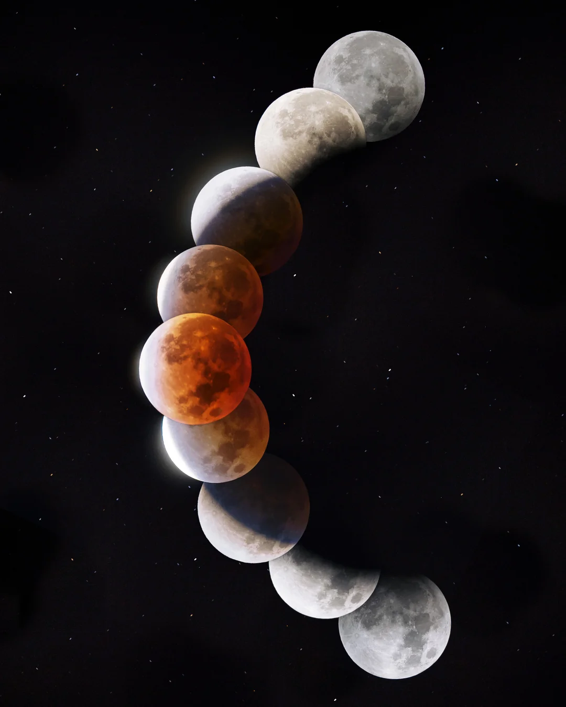
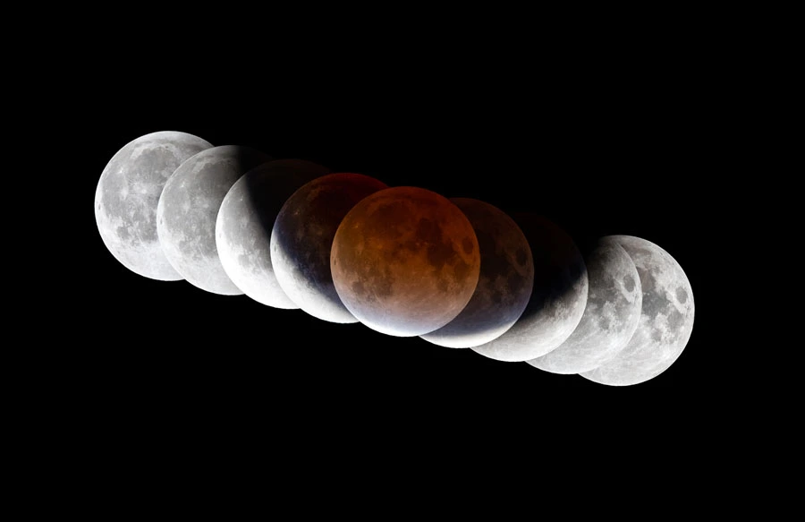

Hipparchus (c. 190-120 BC)
He measured the Moon's motion using Babylonian eclipse records alongside his own observations. He found that the Moon's path is tilted about 5° to the ecliptic, and that it moves at uneven speeds.

Several images of the Moon being taken, entering and exitting a
solar eclipse, can infer the shape of the Earth. They can also let
you grasp the relative size of the Earth in comparison to the moon.
The shape of the Earth can be inferred directly from the shape of
the shadow it throws on the moon during an eclipse. By observing
this shadow, we can rule out other shapes such as triangular, square
or hexagonal. Thus, direct observation tells us that the earth is a
sphere and consequently that the globe is a good representation of
the way the Earth actually is.

He measured the Moon's motion using Babylonian eclipse records alongside his own observations. He found that the Moon's path is tilted about 5° to the ecliptic, and that it moves at uneven speeds.
Kepler showed that orbits are ellipses, not circles. Applied to the Moon, this explained why its distance and apparent speed vary through the month
Newton explained why the Moon orbits. He tested whether the force keeping the Moon in orbit is the same gravity that makes an apple fall,